Lock
SCR-LOCK-001·002·003·004 · Statusübersicht · Anwendung · elektronische Signatur · Aufhebung · Historie
Lock-Statusübersicht
- 1.1Bildschirmaufbau
- 1.2Lock-Status auf einen Blick
- 1.3Probandenliste und Zeilenaktionen
1.1Bildschirmaufbau
Überblick
Hier sperren Sie Daten, die bereits eingegeben wurden, damit sie sich nicht mehr ändern, und sehen auf einen Blick, was gesperrt ist. Sperren können Sie auf zwei Ebenen setzen, für einzelne Probanden und für das gesamte Projekt. Beim Setzen und Aufheben müssen Sie jeweils eine Begründung angeben und mit einer elektronischen Signatur bestätigen. Der Bildschirm ist von oben nach unten aufgebaut: Projektsperre → Zählung → Filter → Probandenliste.
Bildschirmbeschreibung
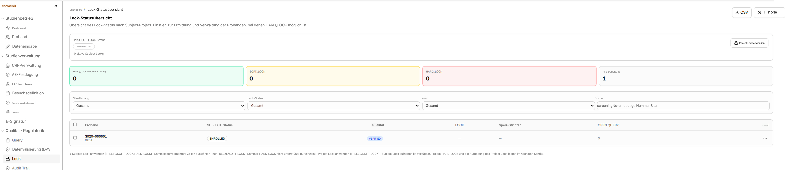
„CSV“ — Lädt die gerade angezeigte Liste der Probanden-Locks als Datei herunter.
„Historie“ — Öffnet die Ansicht mit den Einträgen zu Sperren und Aufhebungen 4.1. Diesen Weg gibt es nur über diese Schaltfläche.
„Project Lock anwenden“ — Sperrt das gesamte Projekt auf einmal 2.4. Wird nur dem Datenmanager angezeigt.
Der Untertitel der Seite beschreibt ihre Aufgabe: „Übersicht über den Lock-Status auf Ebene der Probanden und des Projekts. Einstiegspunkt zur Ermittlung und Verwaltung von Probanden, die HARD_LOCK erhalten können.“
Status des Project Lock — Ob das gesamte Projekt gesperrt ist, und die Zahl der aktiven Proband-Locks 1.2.
Vier Zählkarten — Fassen den Sperrstand in Zahlen zusammen 1.2.
Vier Filter — Teilnehmende Einrichtung · Lock-Status · Qualität · Suche. Die Suche findet Probanden über Screening-Nummer · eindeutige Nummer · Einrichtungscode.
Probandenliste — Sperrstatus und Aktionen je Proband 1.3.
Hinweis unten — Eine Zeile, die den derzeitigen Funktionsumfang beschreibt (siehe Hinweise unten).
Im linken Menü steht „Qualität · Regulatorik > Lock“ an der Stelle dieser Seite.
Andere Wege zu dieser Seite
- • Linkes Menü „Qualität · Regulatorik > Lock“ — Erscheint erst, nachdem Sie das Projekt geöffnet haben.
- • Projekt-Dashboard > Widget „Lock-Stand“ über „Lock verwalten →“
- • Projekt-Dashboard > Widget „Datenqualität“ über „Probandenliste Qualität · Lock“ — Der Weg, wenn Sie beim Prüfen der Qualität zur Sperre übergehen.
Zu beachten
Unbedingt prüfen Datenschäden · Formular nicht abschließbar
- • Der letzte Satz des Hinweises unten passt nicht mehr zur aktuellen Seite. Dort steht, die Aufhebung von Project HARD_LOCK und Project Lock werde im nächsten Schritt bereitgestellt. Die Aufhebung der Projektsperre gibt es aber bereits. Ist das Projekt gesperrt, erscheint an derselben Stelle die Schaltfläche „Project Lock aufheben“. Nur der Hinweistext ist noch vom früheren Stand. Richtig ist aber, dass sich das gesamte Projekt noch nicht mit HARD_LOCK sperren lässt.
1.2Lock-Status auf einen Blick
Überblick
Bevor Sie die Liste Zeile für Zeile durchgehen, sehen Sie hier, wie weit das Projekt gesperrt ist. Die oberste Karte zeigt die Projektsperre, darunter stehen vier Felder mit der Zählung nach Probanden. Die Zählung bezieht sich auf alle Probanden, unabhängig vom Filter. Auch wenn Sie einen Filter setzen, ändern sich diese Zahlen nicht.
Bildschirmbeschreibung
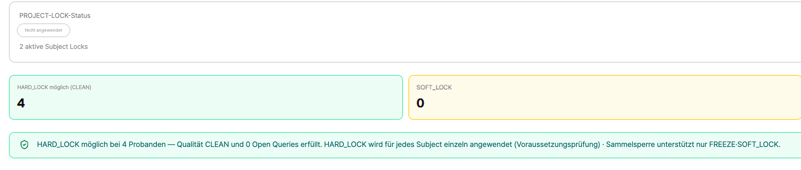

„Project Lock anwenden“ — Sperrt das gesamte Projekt 2.4. Ist es schon gesperrt, lautet die Schaltfläche an derselben Stelle „Project Lock aufheben“.
Status der Projektsperre — In der Aufnahme steht „Nicht angewendet“. Ist das Projekt gesperrt, erscheinen an dieser Stelle ein Badge mit dem Sperrtyp und das Anwendungsdatum.
Aktive Subject Locks — Anzahl der Probanden, die gerade gesperrt sind. Ist das Projekt gesperrt, erscheint zusätzlich „Project Lock angewendet — einzelne Aufhebung untergeordneter Subject Locks blockiert“ (siehe Hinweise bei 1.3).
HARD_LOCK möglich (CLEAN) — Anzahl der Probanden, deren Qualität CLEAN ist und die noch nicht gesperrt sind. VERIFIED wird hier nicht mitgezählt.
SOFT_LOCK — Anzahl der Probanden, die im Schritt der Datenbereinigung gesperrt sind.
Hinweisband — „HARD_LOCK möglich bei 4 Probanden — Bedingungen erfüllt: Qualität CLEAN + 0 Open Query. HARD_LOCK wird je Subject einzeln angewendet (mit Prüfung der Voraussetzungen) · Sammelanwendung unterstützt nur FREEZE und SOFT_LOCK.“ Gibt es keinen einzigen Probanden, für den das möglich ist, erscheint dieses Band nicht.
HARD_LOCK — Anzahl der vollständig gesperrten Probanden.
Alle Subjects — Gesamtzahl der Probanden im Projekt. Sie ergibt nicht die Summe der drei Zahlen davor, denn Probanden, die weder gesperrt sind noch den Qualitätsstatus CLEAN haben, werden nirgends gezählt.
Drei Sperrtypen
| Sperrtyp | Was blockiert wird | Anwendungsfall |
|---|---|---|
| FREEZE | Datenänderungen und Query-Antworten werden blockiert. Quelldatenabgleich (SDV) bleibt erlaubt | Wenn Daten während der Prüfung vorübergehend festgehalten werden sollen |
| SOFT_LOCK | Nur Änderungen als Reaktion auf Query-Antworten sind erlaubt | Datenbereinigungsschritt · kurz vor der vollständigen Sperre |
| HARD_LOCK | Vollständige Sperre. Wird nur einzeln je Proband angewendet und setzt voraus, dass die Prüfung der Voraussetzungen bestanden ist | Wenn Daten endgültig festgeschrieben werden |
Zu beachten
Leicht missverständliches Verhalten
- • „HARD_LOCK möglich“ zählt nur Probanden mit dem Qualitätsstatus CLEAN. Probanden mit dem Qualitätsstatus VERIFIED sind zwar bereits quellgeprüft, werden in dieser Zahl aber nicht berücksichtigt. In der Spalte Lock der Liste erscheint bei ihnen auch kein Badge „HARD möglich“. Wenn es so aussieht, als wären Probanden sperrfertig, die Zahl aber 0 ist, prüfen Sie zuerst die Spalte Qualität.
1.3Probandenliste und Zeilenaktionen
Überblick
Jeder Proband steht in einer Zeile. Ob sich ein Proband sperren lässt, erkennen Sie erst, wenn Sie die drei Spalten Qualität, Lock und Open Query zusammen betrachten. Eine vollständige Sperre ist nur möglich, wenn die Qualität CLEAN ist und keine offene Query vorliegt. Die eigentlichen Aktionen starten Sie über das Menü ⋯ am rechten Zeilenende.
Bildschirmbeschreibung
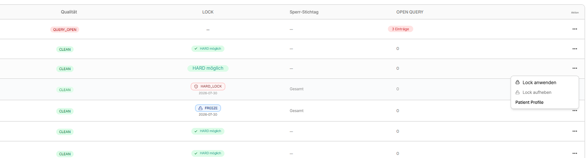
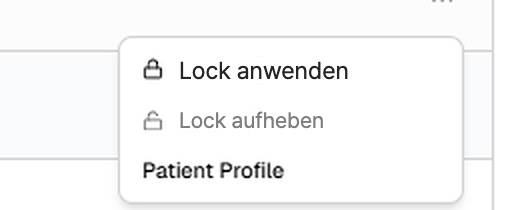
⋯ — Öffnet das Aktionsmenü für diesen Probanden.
„Lock anwenden“ — Öffnet das Fenster zum Sperren 2.2. In einer Zeile mit HARD_LOCK ist sie deaktiviert. Nach der vollständigen Sperre lässt sich keine andere Sperre mehr darüberlegen.
„Lock aufheben“ — Öffnet das Fenster zur Aufhebung 3.1. Ist die Zeile nicht gesperrt oder ist das gesamte Projekt gesperrt, ist sie deaktiviert (siehe Hinweise unten).
„Patient Profile“ — Öffnet die Gesamtansicht dieses Probanden. Verwenden Sie sie, um die Inhalte vor dem Sperren zu prüfen.
Die Tabelle hat 8 Spalten — Auswahl · Proband · Subject-Status · Qualität · Lock · Sperr-Stichtag · Open Query · Aktion. Die erste Spalte Auswahl ist nur für den Datenmanager sichtbar 2.1.
Qualität — eines von CLEAN · VERIFIED · PENDING · QUERY_ANSWERED · QUERY_OPEN. Die erste Zeile in der Aufnahme hat QUERY_OPEN, deshalb lässt sie sich nicht sperren.
Lock — Ist der Proband gesperrt, stehen hier Sperrtyp-Badge und Anwendungsdatum. Lässt er sich sperren, erscheint ein grünes Badge „HARD möglich“. Trifft beides nicht zu, steht hier „—“.
Sperr-Stichtag — „Gesamt“ bedeutet, dass alle Daten gesperrt sind. Erscheinen ein Datum und das Badge „Teilweise“, sind nur die Daten bis zu diesem Datum gesperrt 2.2. Nicht gesperrte Zeilen zeigen „—“.
Open Query — Anzahl der offenen Queries. Solange die Zahl nicht 0 ist, lässt sich keine vollständige Sperre setzen.
Zu beachten
Unbedingt prüfen Datenschäden · Formular nicht abschließbar
- • Ist das gesamte Projekt gesperrt, lässt sich ein einzelner Proband nicht separat entsperren. Dann ist im Zeilenmenü „Lock aufheben“ nicht anklickbar, und es erscheint der Hinweis „Zuerst Project Lock aufheben“. Öffnet sich das Fenster trotzdem, wird es mit dem Text „Ein übergeordneter Project Lock ist aktiv. Zuerst muss der Project Lock aufgehoben werden, bevor der Subject Lock aufgehoben werden kann.“ blockiert. Heben Sie also zuerst die Projektsperre auf und versuchen Sie es dann erneut.
Lock anwenden
- 2.1Zielauswahl
- 2.2Fenster Lock anwenden
- 2.3Elektronische Signatur
- 2.4Gesamte Projektsperre
2.1Zielauswahl
Überblick
Mit diesem Ablauf sperren Sie mehrere Probanden auf einmal. Setzen Sie in der Zeile einen Haken in das Kästchen links. Dann erscheint über der Liste ein blaues Band, und darin starten Sie die Sammelsperre direkt. Für einen einzelnen Probanden setzen Sie keinen Haken. Öffnen Sie stattdessen in dieser Zeile das ⋯ > „Lock anwenden“ 1.3. Nur so lässt sich die vollständige Sperre (HARD_LOCK) setzen.
Bildschirmbeschreibung
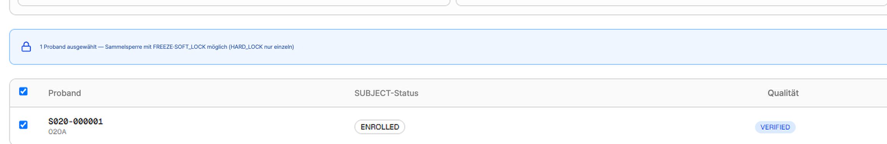
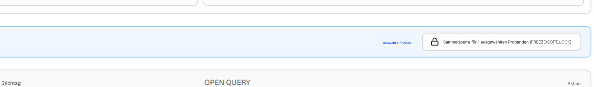
Zeile auswählen — Setzen Sie einen Haken bei den Probanden, die Sie sperren wollen. Die Zahl im Band oben ändert sich mit der Anzahl der Haken.
„Auswahl aufheben“ — Entfernt alle Haken.
„N Probanden auswählen — Sammelsperre (FREEZE/SOFT_LOCK)“ — Öffnet das Fenster zum Sperren 2.2. Wie der Name schon zeigt, lassen sich bei der Sammelsperre nur zwei Typen auswählen.
Der Text im Band nennt die Einschränkung noch einmal: „1 Proband ausgewählt — Sammel-FREEZE/SOFT_LOCK möglich (HARD_LOCK nur einzeln)“.
Das Kästchen im Tabellenkopf setzt Haken bei allen Zeilen, die dem aktuellen Filter entsprechen. Wenn Sie zuerst filtern und dann hier klicken, ist das am sichersten.
Zu beachten
Leicht missverständliches Verhalten
- • Die Spalte Auswahl und die Sammelsperre sind nur für den Datenmanager sichtbar. Für den Hauptprüfer gibt es die Auswahlspalte nicht, daher kann er diesen Ablauf nicht starten. Er muss die Probanden einzeln über ⋯ > „Lock anwenden“ sperren. Dass etwas nicht zu sehen ist, ist kein Fehler, sondern das normale Verhalten je nach Berechtigung. Aus demselben Grund ist auch „Project Lock anwenden“ nur für den Datenmanager vorgesehen.
2.2Fenster Lock anwenden
Überblick
In diesem Fenster legen Sie fest, welche Sperre, aus welchem Grund und bis wohin gesetzt wird. Wenn Sie diese vier Angaben ausfüllen, gelangen Sie zum Schritt der elektronischen Signatur. Erst mit der Signatur ist die Sperre bestätigt 2.3. Der Untertitel oben im Fenster zeigt, wie viele Datensätze diesmal gesperrt werden. Prüfen Sie ihn vorher, damit Sie nicht den falschen Bereich sperren.
Bildschirmbeschreibung
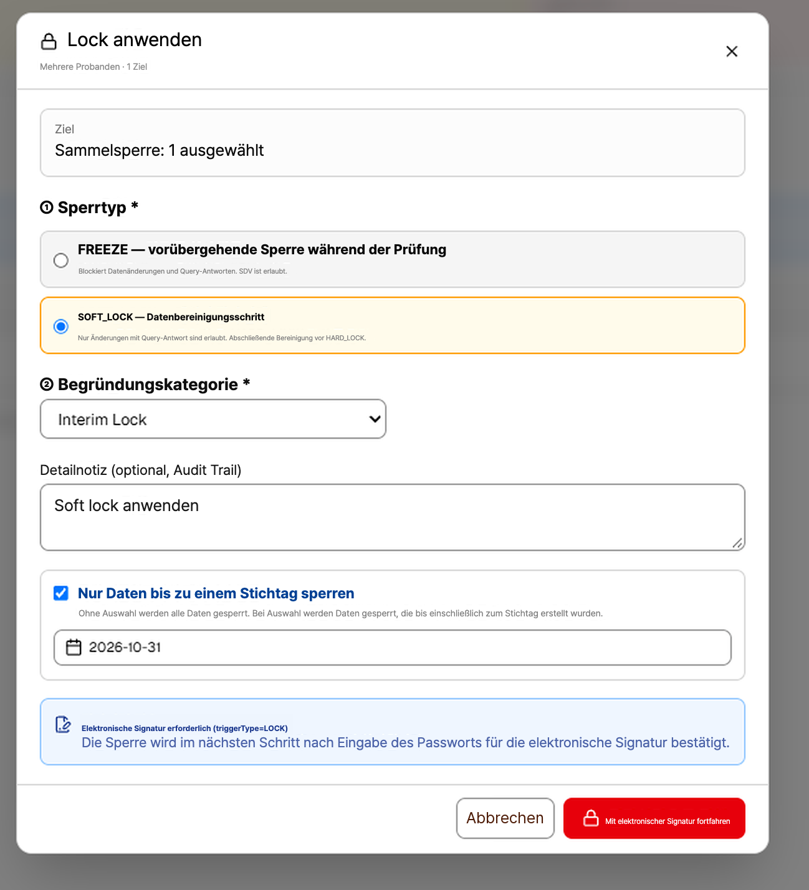
① Sperrtyp — In der Aufnahme ist SOFT_LOCK ausgewählt. Die gewählte Option wird farbig markiert. Bei der Sammelsperre erscheinen nur FREEZE und SOFT_LOCK.
② Begründungskategorie — Muss unbedingt ausgewählt werden. Die Liste hängt vom oben gewählten Sperrtyp ab (siehe Tabelle unten).
Detailnotiz — Hier halten Sie den Hintergrund der Sperre fest. Die Bezeichnung lautet „Optional“, tatsächlich müssen Sie aber etwas eintragen, damit es weitergeht (siehe Hinweise unten).
Nur Daten bis zu einem Stichtag sperren — Ohne Haken werden alle Daten gesperrt.
Mit Haken erscheint ein Datumsfeld. Gesperrt werden auch die Daten, die am Stichtag selbst entstanden sind. Das bedeutet der Text „einschließlich des Stichtags“ im Fenster.
„Mit elektronischer Signatur fortfahren“ — Öffnet den Schritt der Signatur 2.3. Die Sperre ist damit noch nicht gesetzt.
Ziel — In der Aufnahme steht „Auswahl 1 Proband, Sammelsperre“. Unter dem Fenstertitel steht „Mehrere Probanden · 1 Ziel“.
Hinweis zur elektronischen Signatur — „Im nächsten Schritt wird die Sperre nach Eingabe des Signaturpassworts bestätigt.“
Begründungskategorien je Sperrtyp
| Sperrtyp | Auswählbare Begründungskategorien |
|---|---|
| FREEZE | Monitoring-Prüfung · Interim Lock · regulatorische Reaktion · Sonstiges |
| SOFT_LOCK | Datenbereinigungsschritt · Interim Lock · regulatorische Reaktion · Sonstiges |
| HARD_LOCK | Studienabschluss · Interim Lock · regulatorische Reaktion · Sonstiges |
Zu beachten
Unbedingt prüfen Datenschäden · Formular nicht abschließbar
- • Die Detailnotiz trägt die Bezeichnung „Optional“, aber ohne Eintrag lässt sich nicht weitergehen. Erst wenn Sie mindestens 3 Zeichen eingeben, wird „Mit elektronischer Signatur fortfahren“ aktiv. Ist die Begründungskategorie schon gewählt und der Button bleibt ausgegraut, prüfen Sie zuerst das Notizfeld. (Im Fenster zur Aufhebung ist dasselbe Feld von Anfang an als Pflichtfeld mit mindestens 5 Zeichen gekennzeichnet, siehe 3.1.) Außerdem wird bei Auswahl der vollständigen Sperre (HARD_LOCK) die Angabe des Stichtags ausgeschaltet. Vollständige Sperren gelten immer für alle Daten.
2.3Elektronische Signatur
Überblick
Dies ist der letzte Schritt, mit dem die Sperre bestätigt wird. Die elektronische Signatur hat rechtliche Wirkung. Dabei wird festgehalten, wer was und mit welcher Bedeutung signiert hat, und einmal gespeichert lässt sich der Eintrag nicht löschen. Prüfen Sie deshalb vor dem Signieren unbedingt, ob das Signaturobjekt genau der Bereich ist, den Sie beabsichtigen. Dieses Fenster erscheint beim Aufheben in gleicher Form 3.1.
Bildschirmbeschreibung
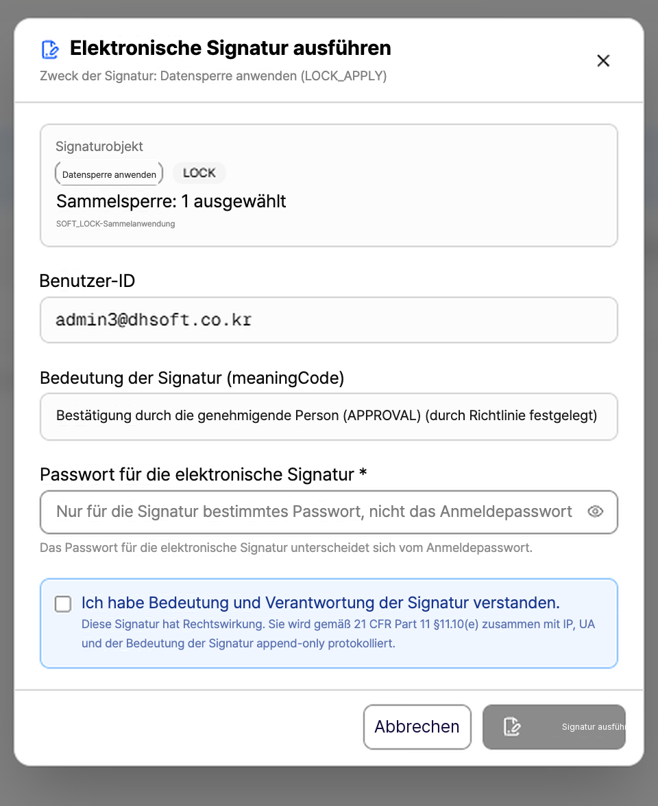
Passwort für die elektronische Signatur — Ein eigenes Signaturpasswort, das sich vom Anmeldepasswort unterscheidet. Mit dem Augensymbol rechts können Sie den eingegebenen Wert einsehen.
„Ich habe Bedeutung und Verantwortung der Signatur verstanden“ — Sie müssen dieses Kästchen aktivieren, bevor Sie signieren können.
„Signatur ausführen“ — Die Signatur wird aufgezeichnet und die Sperre bestätigt.
Zweck der Signatur — Unter dem Titel steht, wofür Sie signieren. In der Aufnahme steht Anwendung der Datensperre.
Signaturobjekt — Hier werden Umfang und Art noch einmal angezeigt, etwa „Auswahl 1 Proband / Sammelsperre SOFT_LOCK“. Das ist Ihre letzte Kontrollstelle.
Benutzer-ID — Das Konto, mit dem Sie gerade angemeldet sind. Sie können nicht für eine andere Person signieren.
Bedeutung der Signatur — Ist fest auf Bestätigung durch den Genehmigenden eingestellt und lässt sich von Ihnen nicht ändern.
Hinweis: „Das Signaturpasswort unterscheidet sich vom Anmeldepasswort.“
Zu beachten
Unbedingt prüfen Datenschäden · Formular nicht abschließbar
- • Eine Signatur lässt sich nicht rückgängig machen, und es wird ein Protokoll geschrieben. Der Text neben dem Kästchen erklärt das: „Diese Signatur hat rechtliche Wirkung und wird gemäß 21 CFR Part 11 §11.10(e) zusammen mit IP, UA und Bedeutung der Signatur nur anhängend (append-only) gespeichert.“ Damit werden auch Verbindungsdaten aufbewahrt, und dieser Eintrag lässt sich weder löschen noch ändern. Wurde versehentlich gesperrt, besteht als Korrektur nur die Möglichkeit, die Sperre erneut aufzuheben und dafür zu signieren. Auch diese Aufhebung wird in der Historie festgehalten 3.1 · 4.1.
2.4Gesamte Projektsperre
Überblick
Dieses Fenster sperrt das gesamte Projekt auf einmal. Die Eingabefelder entsprechen denen der Probandensperre, doch der Umfang ist ein anderer. Alle untergeordneten Probanden werden mitgesperrt, und danach lässt sich ein einzelner Proband nicht separat entsperren (siehe Hinweise bei 1.3). Die Aufnahme zeigt das Fenster im Ausgangszustand, in dem noch nichts ausgewählt ist.
Bildschirmbeschreibung
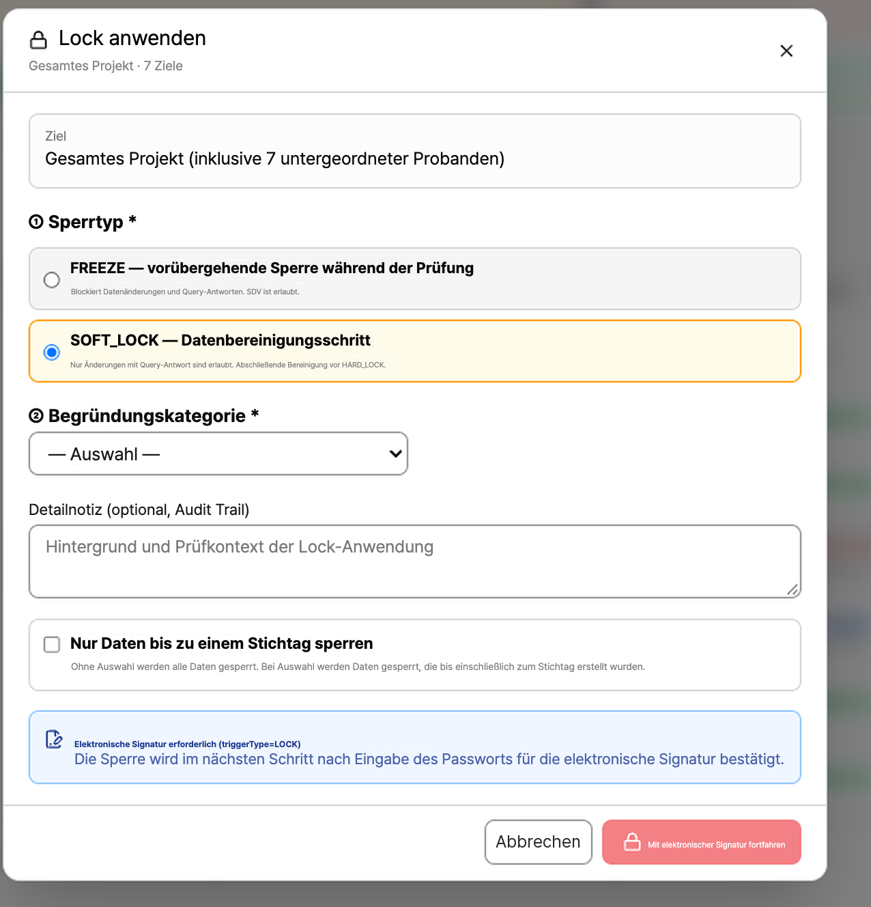
② Begründungskategorie — Zu Beginn steht hier „— Auswahl —“. Sie müssen eine Kategorie wählen.
Solange noch keine Kategorie gewählt ist, bleibt „Mit elektronischer Signatur fortfahren“ ausgegraut und lässt sich nicht anklicken. In der Aufnahme ist das der Fall. Auch die Detailnotiz muss ausgefüllt sein, damit die Schaltfläche aktiv wird (siehe Hinweise bei 2.2).
Unter dem Fenstertitel wird die Anzahl der Ziele angezeigt. In der Aufnahme steht „Gesamtes Projekt · 7 Ziele“.
Ziel — „Gesamtes Projekt (inklusive 7 untergeordneter Probanden)“. Diese Zahl ist die tatsächliche Anzahl der Probanden, die gesperrt werden.
Es gibt nur zwei Sperrtypen — FREEZE und SOFT_LOCK. Eine vollständige Sperre (HARD_LOCK) für das gesamte Projekt ist noch nicht verfügbar.
Detailnotiz — Der Hinweistext sagt, was Sie hier eintragen sollen („Hintergrund der Sperre · Prüfzusammenhang“).
Stichtag-Angabe kann auch bei der Projektsperre verwendet werden. Ohne Haken werden alle Daten gesperrt.
Hinweis zur elektronischen Signatur — Der nächste Schritt entspricht dem der Probandensperre 2.3.
Zu beachten
Unbedingt prüfen Datenschäden · Formular nicht abschließbar
- • Wird das gesamte Projekt gesperrt, lässt sich die Sperre einzelner Probanden nicht mehr aufheben. Danach sind in der Zeilenmenü-Liste alle „Lock aufheben“ deaktiviert. Um einen einzelnen Probanden freizugeben, müssen Sie zuerst die Projektsperre aufheben. Ist nur ein Teil der Probanden bereinigt, sperren Sie besser nicht das ganze Projekt, sondern nur diese Probanden über die Sammelsperre 2.1. Das lässt sich später leichter zurücknehmen.
Lock aufheben
- 3.1Fenster Lock aufheben
3.1Fenster Lock aufheben
Überblick
In diesem Fenster heben Sie eine Sperre wieder auf. Oben steht zuerst, welche Sperre gerade gilt. Darunter tragen Sie ein, warum Sie sie aufheben. Wie beim Sperren wird die Aufhebung erst wirksam, wenn Sie die elektronische Signatur abgeschlossen haben 2.3. Die Liste der Aufhebungsgründe ist eine andere als die Begründungskategorien beim Sperren und wird unter der Codeverwaltung in den Projekteinstellungen gepflegt.
Bildschirmbeschreibung

Grund der Aufhebung — Hier müssen Sie etwas auswählen. Zur Auswahl stehen unter anderem: Monitoring beendet · Weitere Änderung nötig · Korrektur eines Fehlers bei der Sperre · Prüfplanänderung · Reaktion auf Audit · Sonstiges.
Detailnotiz — Pflichtfeld mit mindestens 5 Zeichen. So steht es auch auf dem Feld.
„Mit elektronischer Signatur fortfahren“ — Öffnet den Schritt der Signatur 2.3.
Aktuelle Sperrart und Anwendungsdatum — Das rote Badge ganz links zeigt die gerade gesetzte Sperrart (in der Aufnahme HARD_LOCK), rechts daneben steht der Zeitpunkt der Anwendung. Diese Zeit ist nicht koreanische Zeit, sondern koordinierte Weltzeit (UTC), erkennbar am Zeichen Z am Ende. Für die koreanische Zeit addieren Sie 9 Stunden (siehe Hinweise bei 4.1).
Angewendet von · Grund · Umfang — Zeigt, wer wann aus welchem Grund gesperrt hat, und ob es sich um eine Gesamtsperre oder eine Teilsperre handelt. In der Aufnahme steht „Umfang: Gesamtsperre“.
Hinweis zu den Auswirkungen — Ein rotes Kästchen, das nur bei der Aufhebung einer vollständigen Sperre erscheint. Es weist darauf hin, dass danach die Datenbearbeitung wieder möglich ist, dass bei einer Änderung Quelldatenabgleich und elektronische Signatur erneut erforderlich sind, und dass Sie eine Query auf dem Query-Bildschirm neu stellen müssen, um sie wiederherzustellen.
Hinweis zur elektronischen Signatur — „Im nächsten Schritt wird die Aufhebung nach Eingabe des Signaturpassworts bestätigt.“
Zu beachten
Unbedingt prüfen Datenschäden · Formular nicht abschließbar
- • Eine vollständige Sperre aufzuheben bedeutet, bereits festgeschriebene Daten wieder zu öffnen. Das rote Hinweisfeld im Fenster nennt den Preis genau: Mit der Aufhebung entfallen die bisherigen Zustände, Quelldatenabgleich (SDV) und elektronische Signatur müssen erneut erfolgen, und alle Änderungen dazwischen werden in der Historie festgehalten. Prüfen Sie zuerst, ob die Aufhebung wirklich nötig ist und ob sich das Thema nicht über eine Query lösen lässt. Muss aufgehoben werden, halten Sie in der Detailnotiz auch den Plan für die Folgemaßnahmen fest.
Lock-Historie
- 4.1Historie abrufen
4.1Historie abrufen
Überblick
Hier sehen Sie, wann, von wem und warum gesperrt und aufgehoben wurde. Die Einträge können nur hinzugefügt werden. Einmal gespeicherte Zeilen lassen sich nicht ändern oder löschen. Muss etwas korrigiert werden, wird eine neue Zeile hinzugefügt. Deshalb gibt es auf dieser Seite keine Bearbeitungsfunktion. Der einzige Weg hierher ist die Schaltfläche „Historie“ auf der Lock-Statusübersicht.
Bildschirmbeschreibung
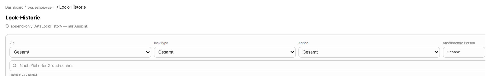
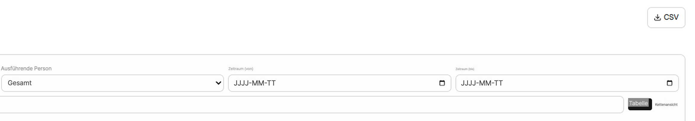

„CSV“ — Lädt die Einträge, die den aktuellen Bedingungen entsprechen, als Datei herunter.
Suche — Findet Einträge über Ziel und Begründungstext.
„Tabelle“ / „Kettenansicht“ — Wählen Sie, ob Sie die Einträge als Tabelle sehen oder je Ziel gruppiert in der Reihenfolge Anwendung → Aufhebung → erneute Anwendung. Die Aufnahme zeigt die Tabelle.
Der Untertitel beschreibt den Charakter der Seite: nur anhängen · nur ansehen.
Sechs Filter — Ziel · Sperrtyp · Vorgangsart (Anwendung/Aufhebung) · Ausführende Person · Zeitraum Beginn · Zeitraum Ende. In der Zeile darunter steht die Anzahl der Anzeige / Gesamtzahl.
Die Tabelle hat 8 Spalten — Zeitpunkt · Ziel · Vorgang · Sperrtyp · Sperr-Stichtag · Ausführende Person · Begründung · Signatur. Die letzte Spalte Signatur verknüpft den Vorgang mit dem Protokoll der elektronischen Signatur.
Hinweis unten — „Die Änderungsprotokolle zu Lock werden künftig auch auf der Seite Audit Trail gesammelt abrufbar sein.“ Tatsächlich lassen sie sich aber schon jetzt in der Kategorie „Lock“ auf der Seite Audit Trail zusammen abrufen. Nur der Hinweistext ist noch vom früheren Stand.
Zeitpunkt — In der Aufnahme steht 2026-07-30 06:00 (siehe Hinweise unten).
Zu beachten
Unbedingt prüfen Datenschäden · Formular nicht abschließbar
- • Die Zeit auf dieser Seite ist nicht koreanische Zeit, sondern unverändert koordinierte Weltzeit. Die 06:00 in der Aufnahme entsprechen koreanischer Zeit 15:00 desselben Tages. Die Anwendungszeit im Fenster Lock aufheben 3.1 wird ebenso angegeben. Dagegen zeigt die Seite Audit Trail „Zeitpunkt (KST)“ an, und das Lock-Widget im Projekt-Dashboard rechnet ebenfalls in koreanische Zeit um. Deshalb erscheint dasselbe Ereignis auf jeder Seite um 9 Stunden verschieden. Wenn Sie einen Zeitpunkt für Prüfungsunterlagen zitieren, geben Sie an, auf welcher Seite Sie ihn abgelesen haben. Wird die koreanische Zeit benötigt, addieren Sie 9 Stunden.